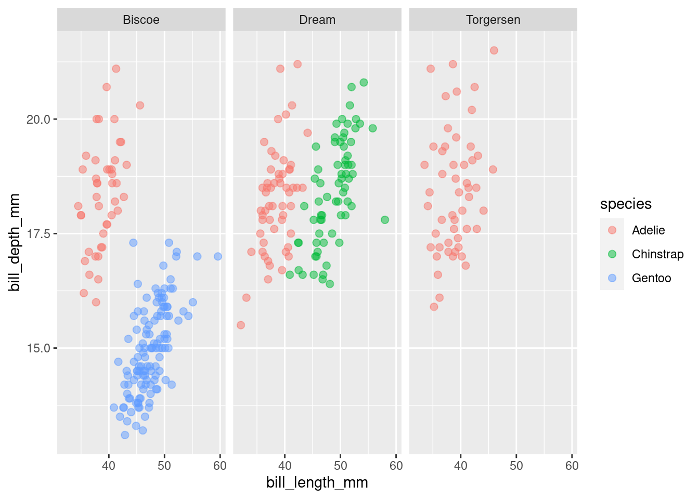
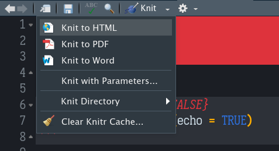

1. Bem-vindos!
Neste tutorial vamos aprender como construir um fluxo de trabalho reprodutível para manuscritos acadêmicos utilizando rmarkdown. Você nunca mais vai precisar recorrer ao velho Ctrl+C e Ctrl+V de novo, garantido!
O que que dizer um fluxo de trabalho reprodutível?
Na grande maioria das vezes o fluxo de trabalho de um projeto de pesquisa é um ciclo de processos que culmina num produto final, o manuscrito, seja ele um simples relatório, nota técnica, ou uma dissertação que futuramente se tornará um artigo científico. Mesmo após a submissão de um trabalho para um periódico, o trabalho ainda não está acabado. Muito provavelmente seu manuscrito passará por revisões, inclusive de etapas metodológicas como revisão de análises ou até mesmo a realização de novas análises propostas pelos revisores.
Pensando nisto, o fluxo normal de realizar as análises em algum software estatístico, e ter a necessidade de redigir o manuscrito em um outro software de edição de texto torna o fluxo de trabalho nada prático e extremamente trabalhoso. Uma mínima revisão requer alterações em diversas partes do documento que deverão ser alteradas manualmente, tornando o processo de revisão ainda mais desgastante. E se houvesse uma maneira de combinar os dois processos de maneira que o seu fluxo de trabalho se tornasse uma rotina fácil e automatizada para revisão e produção dos seus manuscritos? Esta é a ideia ao utilizarmos todo o poder do rmarkdown na produção dos mais diversos tipos de documentos.
O que é o rmarkdown ?
O rmarkdown é um pacote desenvolvido buscando facilitar a reproducibilidade, uma vez que código e texto podem ser incorporados em um mesmo documento, gerando formatos diferentes de arquivo (html, PDF, Word) a partir de uma mesma fonte. Não é o foco deste tutorial discutir o básico do rmarkdown mas é possível compreender como a marcação funciona na produção dos documentos quando partirmos para o exemplo prático.
Para saber mais sobre o pacote vale a pena consultar o livro R Markdown: the definitive guide disponível gratuitamente online. Uma outra fonte muito bacana é uma colinha (cheat sheet) com um resumo de todas os códigos utilizados na marcação dos documentos bem como as principais opções para geração dos arquivos.
O que vamos aprender nesse tutorial?
- Como estruturar um arquivo
rmarkdownbásico - Montar um fluxo de trabalho que seja reprodutível
- Gerenciar referências bibliográficas em um arquivo markdown
- Como exportar o arquivo final em um formato de sua preferência
2. Seu primeiro arquivo em rmarkdown
Se você ainda não possui o pacote instalado basta fazer a instalação pela menu Tools > Install packages do RStudio, ou utilizando o comando install.packages("rmarkdown"), entretanto é muito provável que você já possua o pacote instalado se utiliza o RStudio.
Com o pacote instalado, criamos um novo arquivo markdown acessando o menu File > New File > R Markdown. É apresentada uma tela com opções para o seu novo arquivo markdown, nesta tela voce pode informar um título para o arquivo, bem como a opção de formato de saída desejada. Informe um titulo e pode escolher HTML como saída, já que essas opções podem ser alteradas a qualquer momento no arquivo.
Ao criar um arquivo novo o rmarkdown já inclui algum conteúdo de exemplo no arquivo, vamos tentar entender o que é cada parte com calma. Estou mostrando somente parte do arquivo padrão gerado para economizar espaço, mas nada que atrapalhe nosso entendimento. Basicamente o que você tem é este arquivo aqui:
E aqui vemos justamente a ideia por trás do rmarkdown, combinar em um único arquivo texto e código, facilitando e muito a vida de todo mundo. Mas vamos então agora entender cada componente desde arquivo markdown:
- Cabeçalho YAML
É o cabeçalho do seu arquivo em markdown, nele estarão indicadas opções de configuração importantes pra quer o seu arquivo final quando gerado, tenha as características que você deseja. Neste cabeçalho definimos parâmetros como o título do documento, autores, data de criação, opções de saída e opções de customização conforme veremos mais adiante quando falarmos da bibliografia. No nosso exemplo temos apenas dois parâmetros setados, o título na tag title e o nosso formato de saída em output, neste caso setado para gerar um documento HTML.
- Code Chunk
Como o arquivo markdown é um arquivo misto, precisamos diferenciar o que é texto do que será interpretado como código em R. Para isso usamos os blocos de código ou code chunks. Estes blocos são delimitados pelo bloco:
```{r} ` `
# seu código em R
```Ainda assim, cada bloco de código pode ser configurado individualmente, o que nos dá grande flexibilidade quanto ao que incluir nos nossos arquivos finais, e como estes blocos serão interpretados ou não na geração dos nossos documentos.
- Texto em Markdown
Markdown nada mais é que uma linguagem de marcação onde um conjunto de caracteres tem significado especial e são interpretados na geração do arquivo produzindo assim um texto formatado seguindo geralmente formatação nos padrões das tags de HTML, sendo estas traduzidas em outros formatos quando gerados arquivos em PDF (LateX) e Word. No arquivo de cola mencionado anteriormente é possível ver todos os caracteres que compõe o conjunto de formatadores do markdown. Mas para exemplificar:
### Isso é um tipo de cabeçalho (header H3)
* Isso gera um item de lista
**Negrito**
*Itálico* e o resultado dos textos formatados é:
Isso é um tipo de cabeçalho (header H3)
- Isso gera um item de lista
Negrito
Itálico
Fácil não é? Consultando a colinha fica fácil estilizar qualquer documento conforme nossas necessidades. Agora vamos partir ao que interessa e ver como podemos então criar o nosso fluxo de trabalho!
3. Pinguins são fofos!
Para o nosso exemplo vamos utilizar a base de dados dos Pinguins de Palmer, ela está disponível em forma de pacote, para instalar basta rodar o comando install.packages("palmerpenguins").
Sobre os dados
Os dados foram coletados pela Drª Kirsten Gorman na Estação Palmer na Antartica. O projeto faz parte da Rede de Pesquisas Ecológicas de Longa Duração (LTER - Long Term Research Network). O data set apresenta informações de três espécies de pinguins do gênero Pygoscelis que ocorrem no arquipélago de Palmer, esses bonitinhos ai da ilustração, conhecidos comumente como Adélie (Pygoscelis adeliae), Gentoo (Pygoscelis papua) e Chinstrap (Pygoscelis antarticus). São basicamente medidas biométricas de bico e nadadeira, peso corporal, informação de sexo e o ano em que foram amostrados os animais.
No exemplo vou utilizar outro pacote muito bacana para manipulação de dados, o tidyverse, se você ainda não tem recomendo instalar, novamente só rodar install.packages("tidyverse"). Este pacote é uma coleção de outros pacotes utilitários que facilitam demais a vida na hora de manipular os mais diversos tipos de conjuntos de dados, não é meu objetivo falar dele aqui, isso é tema de um outro tutorial, prometo. Vamos dar uma olhada nos dados?
library(tidyverse, quietly = TRUE)
library(palmerpenguins)
library(gt, quietly = TRUE)
data(package='palmerpenguins')
penguins %>% head() %>%
gt()| species | island | bill_length_mm | bill_depth_mm | flipper_length_mm | body_mass_g | sex | year |
|---|---|---|---|---|---|---|---|
| Adelie | Torgersen | 39.1 | 18.7 | 181 | 3750 | male | 2007 |
| Adelie | Torgersen | 39.5 | 17.4 | 186 | 3800 | female | 2007 |
| Adelie | Torgersen | 40.3 | 18.0 | 195 | 3250 | female | 2007 |
| Adelie | Torgersen | NA | NA | NA | NA | NA | 2007 |
| Adelie | Torgersen | 36.7 | 19.3 | 193 | 3450 | female | 2007 |
| Adelie | Torgersen | 39.3 | 20.6 | 190 | 3650 | male | 2007 |
Exemplo
Imagine que o nosso objetivo é produzir um relatório sobre os dados coletados neste projeto. Não vamos construir um documento completo, até porque isso é um tutorial, mas o esqueleto que veremos aqui pode ser adaptado para qualquer tipo de manuscrito que você precisar produzir. Mas antes, precisamos falar sobre como vamos gerenciar as nossas referências bibliográficas, já que essa com certeza é uma das partes que mais atormenta qualquer pesquisador na hora de escrever um manuscrito.
4. Gerenciando Referênciais
Dar conta de manter e organizar todas as referências usadas em um manuscrito pode tomar muito tempo, felizmente com o rmarkdown isso é muito simples!
No documento markdown, pra gerenciar nossas referências vamos precisar basicamente de dois arquivos:
- Um arquivo de referências: existem vários formatos deste arquivo, no caso vamos utilizar o formato BibTeX, já explico o porquê! Esse arquivo nada mais é que uma coleção das informações de cada referência utilizada organizada em um único arquivo.
@article{gorman2014structural,
title={Structural size measurements and isotopic signatures of foraging among adult male and female gentoo penguins (Pygoscelis papua) nesting along the Palmer Archipelago near Palmer Station, 2007-2009},
author={Gorman, Kristen and LTER, Palmer Station Antarctica},
year={2014},
publisher={Environmental Data Initiative}
}
Como vocês podem ver, nada demais. Apenas um arquivo de texto estruturado com todas as informações da obra citada. As informações podem variar um pouco a depender da fonte de dados, mas basicamente temos neste arquivo:
- Um identificador único: neste caso
gorman2014structuralé o identificador que usaremos no nosso markdown para referenciar esta obra. - E as informações de publicação: titulo, autores, ano e a editora.
Muito simples não? Mas se existem outros formatos, BibTex é o melhor? Não sei. Pelas minhas pesquisas, o formato padrão e mais utilizado é o JSON, entretanto, a vantagem de utilizar o BibTex é que podemos conseguir a informação de cada obra facilmente neste formato utilizando o Google Acadêmico! Basta acessar a plataforma e buscar pelo título da obra que você deseja a referência. Nos resultados que aparecerão, você verá a imagem de duas aspas ao rodapé do resultado, clicando neste ícone você tem acesso a como referenciar esta obra em diversas opções de normas, ABNT inclusive, embora seja apresentada como NBR. Nesta nova janela que abrir, no rodapé estará o link para acesso ao BibTeX desta obra, só clicar e ser feliz!
A partir de então é só buscar o código BibTeX de todas as obras que serão citadas e ir inserindo eles um após o outro em um arquivo de texto e salvar este arquivo com a extensão .bib. Não precisa se preocupar em ordenar as referências de forma alguma neste arquivo, basta que você tome o cuidado de copiar corretamente todo o código BibTeX, lembrando que o código pra uma entrada começa no @ e termina na } para cada entrada. No nosso exemplo criarei um arquivo chamado referencias.bib com apenas três obras referenciadas para usarmos como exemplo.
@article{gorman2014structural,
title={Structural size measurements and isotopic signatures of foraging among adult male and female gentoo penguins (Pygoscelis papua) nesting along the Palmer Archipelago near Palmer Station, 2007-2009},
author={Gorman, Kristen and LTER, Palmer Station Antarctica},
year={2014},
publisher={Environmental Data Initiative}
}
@article{lter2016structural,
title={Structural size measurements and isotopic signatures of foraging among adult male and female chinstrap penguins (Pygoscelis antarctica) nesting along the Palmer Archipelago near Palmer Station, 2007-2009},
author={LTER, Palmer Station Antarctica and Gorman, Kristen},
year={2016},
publisher={Environmental Data Initiative}
}
@article{gorman2014ecological,
title={Ecological sexual dimorphism and environmental variability within a community of Antarctic penguins (genus Pygoscelis)},
author={Gorman, Kristen B and Williams, Tony D and Fraser, William R},
journal={PloS one},
volume={9},
number={3},
pages={e90081},
year={2014},
publisher={Public Library of Science San Francisco, USA}
}- Modelo de Referência (Norma técnica)
O segundo arquivo que precisamos, é um arquivo de modelo de referência. E aqui entra um ponto muito legal. Geralmente cada revista/periódico ou Universidade tem as suas normas de publicação, e lidar com isso é muitas vezes frustrante. No repositório Zotero podemos encontrar uma infinidade de estilos de formatação de referência, no momento em que escrevo esse tutorial são mais de 10 mil modelos disponíveis. No nosso caso usarei o modelo da ABNT como referência. Pra isso basta entrar no site da Zotero e buscar por ABNT que irão aparecer diversos resultados, escolha o que melhor encaixa nas normas da sua publicação e faça o download do arquivo .csl. Feito isso, precisamos agora apenas atualizar o nosso YAML com as informações de referência. No meu caso baixei o template ABNT utilizado pelo IPEA. E PRONTO! Acabou a nossa dor de cabeça com as referências! Agora vamos montar o nosso esqueleto em markdown e ver como de fato referenciar as obras no texto e ver o resultado!
4. Template Markdown
1. Introdução
Vamos ver um exemplo de como fazer citações no markdown. Lembram do nosso arquivo de referências com as obras em BibTeX? Quando eu quero fazer uma citação, basta adicionar [@identificador] e o Markdown substitui pra gente a saída com a devida referência. Vamos testar? Vamos citar o primeiro artigo no nosso exemplo [@gorman2014structural] , essa seria a forma de citar, então (Gorman e LTER, 2014). O identificador em cinza que vocês veem aqui é também um código markdown para exibir sem renderizar o cógido, qualquer objeto que nós envolvamos entre aspas simples, ele será renderizado literalmente como código, sem ser interpretado pelo motoro do knitr quando gerar o nosso arquivo final. Os arquivos em markdown deste tutorial vão ficar disponíveis no meu github pra que vocês possam usar e modificar a vontade.
2. Materiais e Métodos
E porquê então esse fluxo é tão bom? Porque podemos modificar o nosso documento em markdown quantas vezes forem necessárias e gerar o nosso arquivo final nos padrões que desejamos, sem a necessidade de ficar copiando e colando entre programas. Vou tentar dar um exemplo claro. Imagine que no nosso trabalho precisemos montar uma tabela com dados descritivos de algumas características dos Pinguins que mencionamos antes, bem como plotar um gráfico simples de dispersão entre duas variáveis mostrando como essas se comportam entre as três espécies. Vamos lá!
3. Resultados e Discussão
Primeiro vamos lembrar nossas variáveis:
[1] "species" "island" "bill_length_mm"
[4] "bill_depth_mm" "flipper_length_mm" "body_mass_g"
[7] "sex" "year" Vamos agora montar uma tabela de dados descrivitos somente das informações do bico com as variáveis bill_lengthe bill_depth que são o comprimento e largura do bico, respectivamente.
penguins %>%
group_by(species) %>%
select(bill_length_mm,bill_depth_mm) %>%
summarise(across(.cols = everything(), .fns = list(Media = mean, Desvio = sd),
na.rm=TRUE,
.names = "{col}_{fn}")) %>% gt()Adding missing grouping variables: `species`| species | bill_length_mm_Media | bill_length_mm_Desvio | bill_depth_mm_Media | bill_depth_mm_Desvio |
|---|---|---|---|---|
| Adelie | 38.79139 | 2.663405 | 18.34636 | 1.2166498 |
| Chinstrap | 48.83382 | 3.339256 | 18.42059 | 1.1353951 |
| Gentoo | 47.50488 | 3.081857 | 14.98211 | 0.9812198 |
E agora vamos montar um simples gráfico de dispersão entre as variáveis bill_lengthe bill_depth.
penguins %>%
ggplot(aes(x=bill_length_mm, y=bill_depth_mm, color = species)) +
geom_point(alpha=.5, size = 2.2) +
facet_wrap(~ island)Warning: Removed 2 rows containing missing values (`geom_point()`).
Bacana não? Mas isso não poderia ser feito normalmente no fluxo de copia e cola? Claro que sim. Mas imagine receber de volta recomendações de revisão da sua análise, e ter que rodar novamente os dados e então sair copiando e colando gráficos, tabelas, tudo em um novo documento. Com o rmakrdown seu documento está no ponto, precisando alterar algum aspecto da análise isso pode ser feito facilmente nos trechos de código e também alterando a discussão respectiva a essas alterações, e no final gerar um documento atualizado com as revisões.
Ah! E retornando as referências, já vimos como referenciar uma obra, agora vamos aprender como fazer uma citação direta do autor no texto. Simplesmente citamos o autor e ao passar a tag identificadora da referência, incluimos um sinal de - antes do @, dessa forma o markdown sabe que ele só precisa inserir o ano da citação e incluir o autor na lista de referências. Por exemplo, podemos ver no gráfico de dispersão com base nos dados obtidos por Gorman e colaboradores (2014) que somente os pinguins da espécie P. adeliae ocorrem nas três ilhas amostradas. Se você observar a sessão de referência mais abaixo vai encontrar a referência que acabamos de inserir no texto.
Caso deseje citar multiplas obras em uma mesma citação, basta separar os @ com ; dentro dos [@obra1 ; @obra2] (Gorman e LTER, 2014; LTER e Gorman, 2016).
Tudo pronto, a última coisa agora é simplesmente gerar o arquivo final no formato que você desejar. No R Studio, na parte superior do seu editor de código você verá um botão escrito Knit com um ícone de um novelo de lã e uma agulha de tricô. Esse botão aciona o pacote knitr que é o responsável por costurar digamos assim o nosso documento final. Na setinha para baixo que aparece ao lado do ícone podemos então escolher entre os três fomatos de saída suportados: HTML, PDF e Word.

A escolha do formato de saída depende pura e simplesmente da sua necessidade, entretanto, para PDF é preciso ter instalado bibliotecas que suportem LateX, caso você tente gerar um PDF e encontre algum erro, provavelmente é esta falta de suporte a um renderizador LateX, qualquer dúvida se não encontrar a solução no google fique a vontade pra me mandar uma mensagem e tentaremos resolver o erro.
4. Conclusões
Resumindo, adotar a prática de gerar seus manuscritos utilizando rmarkdown pode contribuir bastante na organização, agilidade e reproducibilidade do seu processo de pesquisa. Um passo extra ainda é tornar este um processo compartilhado utilizando por exemplo um repositório no github no qual você e os demais colaboradores possam trabalhar em conjunto em um mesmo arquivo markdown com controle de versão. Se quiser saber mais sobre git e github aqui tem um vídeo muito bacana do pessoal do R-Ladies São paulo com uma playlist muito boa sobre como configurar git e github com o R Studio.
As referências por padrão serão colocadas sempre como o último item no arquivo gerado, porém se for do seu interesse que as referências aparecam antes de alguma seção, a de apêndice por exemplo, basta utilizar o código abaixo que as referências serão colocadas no local aonde você inserir este trecho de código HTML:
<div id="refs"></div>Como vocês vão perceber, como este site aqui também foi desenvolvido ustilizando rmarkdown, as referências que utilizei de exemplo se encontram no rodapé da postagem. Bacana não?
5. Considerações finais
E então? Chega de sofrer com organização de bibliografia e copiar e colar tabelas de resultados e gráficos. Espero que o tutorial tenha sido útil, qualquer dúvida ou comentário vocês me encontram pelas redes sociais. E por favor se acharem este conteúdo útil compartilhem com os colegas, conhecimento se constrói em comunidade!
Referências
GORMAN, K. B.; WILLIAMS, T. D.; FRASER, W. R. Ecological sexual dimorphism and environmental variability within a community of Antarctic penguins (genus Pygoscelis). PloS one, v. 9, n. 3, p. e90081, 2014.
GORMAN, K.; LTER, P. S. A. Structural size measurements and isotopic signatures of foraging among adult male and female gentoo penguins (Pygoscelis papua) nesting along the Palmer Archipelago near Palmer Station, 2007-2009. 2014.
LTER, P. S. A.; GORMAN, K. Structural size measurements and isotopic signatures of foraging among adult male and female chinstrap penguins (Pygoscelis antarctica) nesting along the Palmer Archipelago near Palmer Station, 2007-2009. 2016.
Reuso
Citação
BibTeX
@online{barros2022,
author = {Paulo Barros},
title = {Gerando manuscritos acadêmicos com referências utilizando
Rmarkdown},
date = {2022-03-07},
url = {https://paulobarros.com.br/posts/2021-07-15_manuscritos_cientificos_rmarkdown/pt},
langid = {pt-BR}
}
Por favor, cite este trabalho como:
PAULO BARROS. Gerando manuscritos acadêmicos com referências
utilizando Rmarkdown. Disponível em: <https://paulobarros.com.br/posts/2021-07-15_manuscritos_cientificos_rmarkdown/pt>.